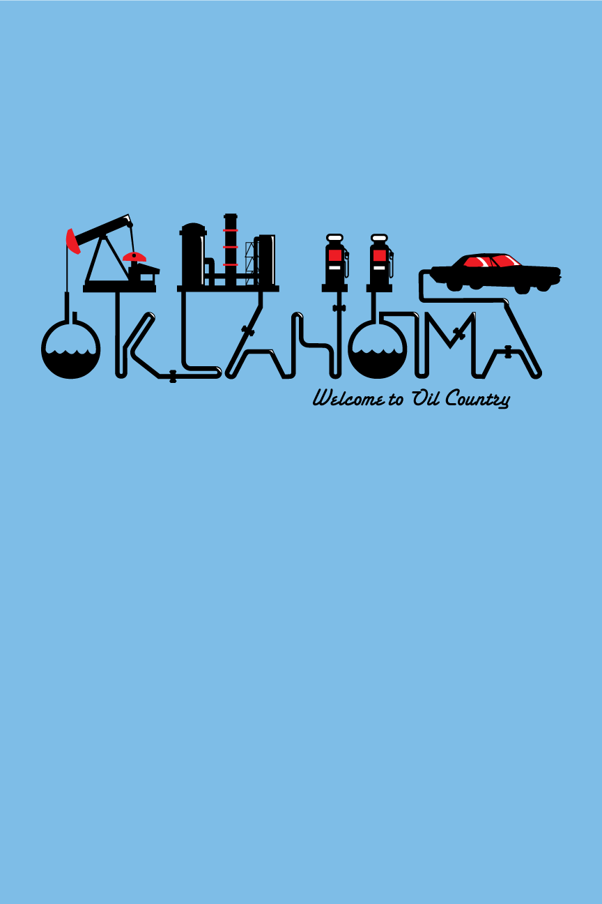
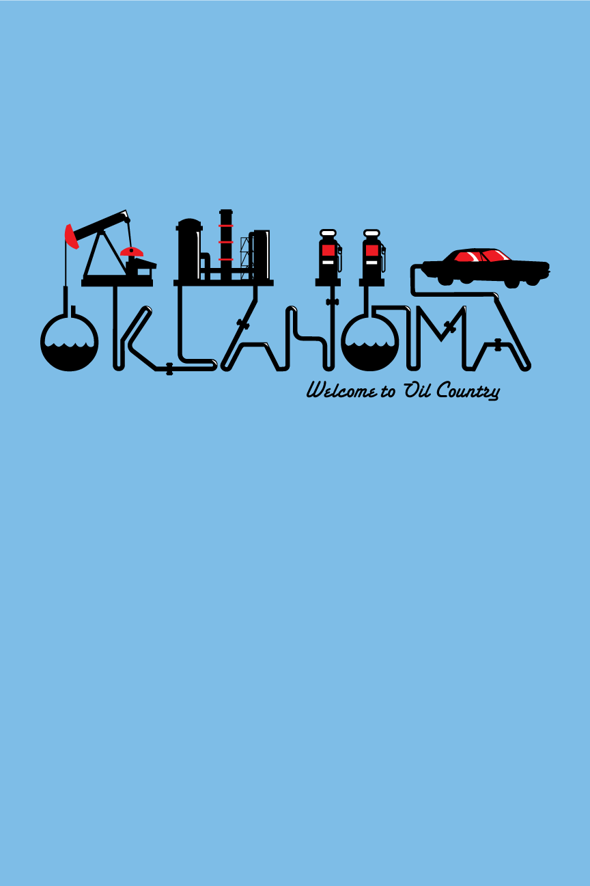

Oklahoma T-shirt Designs
I'm still not sure what exactly this one was for. The company I was interning at said they were for the Oklahoma Tourism Board. Whether or not they were submitted to or used by the OK Tourism Board remains a mystery to me. Hopefully no one is collecting money on the designs without my knowledge.
They're cool designs at least.
 
